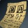
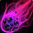

星界转移
90 秒（位面旅行者）· 持续 12 秒
所有伤害 −40%。全本唯一大减伤，按固定高压点预留，在萨祖克斯可一牌同盖碾压与狂怒。
密谋小径汇集高频全团邪火、无视护甲物理弹幕与致死诅咒。元素萨满没有免疫，靠 90 秒星界转移盯紧固定点：巨大浮龙波、凯斯媞亚混沌爆裂、赞恩影舞步、破坏魔惩罚者魔化狂乱、萨祖克斯地狱火碾压连魔化狂怒与尾王古尔丹之指；净化灵魂秒驱术士厄运诅咒，清毒图腾清街头扒手断心药膏，妖术开赞恩前控监工，土元素（3 分钟）补星界空档。
四张手牌管住全本，外加一条机制硬限制与五组必断读条。
所有伤害 −40%。全本唯一大减伤，按固定高压点预留，在萨祖克斯可一牌同盖碾压与狂怒。
配始源羁绊不再嘲讽，改为最大生命值 +15%。专门补星界空档：赞恩、邪能街、萨祖克斯与尾王。
专驱腐化的术士厄运诅咒（10 秒到期 4 码暗影分摊），上身优先驱，未好喊队友补驱。
打断后 12 秒受法术伤害 −15%（物理弹幕与流血吃不到）。盯紧下方必断读条与可断引导。
一场 +24 限时实录（展示真实冷却节奏，非每波强制照搬；具体取舍见下方路线）。
看到什么 → 按什么 → 为什么。带「必做」标签的高亮行是每把必做的关键动作。伤害数字是 +24 实测（含被吸收的部分），层数越高越大。


取自 +24 限时录像的元素天赋，英雄天赋先知。复制字符串，在游戏天赋界面点「导入」。
CYQAAAAAAAAAAAAAAAAAAAAAAAAAAAzMbbzMGjZZbZMmhZAAAAgFzsBDYAzGTgZBAmlZmZwGaDzsNzyMzMzDMmlZZmZZYMzsAAMAwMjhhB
这四个防御与功能天赋不要动
常见可换：阵风 ↔ 幽魂步；静电充能 ↔ 巫毒掌握；喷流、奥拉基尔之风、图腾集中、先祖狼魂亲和、首席升腾者 ↔ 图腾投射、冰霜震击、飞升卓越、升涌气流、大地之盾、塞拉赞恩的韧性、治疗链；另常驻配有清毒图腾、妖术、电能图腾、自然守护者、元素防护、生机盎然、恩赐之魂、狂风图腾。